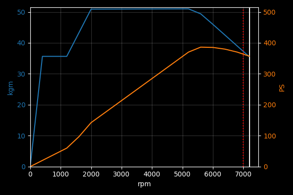

TOKYO XTREME RACER (2025) INFO & DATA RESOURCE
GR SUPRA RZ (DB06) '22
PRICE7,313,000 CP MANUFACTURERTOYOTA CATEGORYSports BODY TYPECoupe DRIVETRAINFR ENGINE TYPEStraight6 INTAKE SYSTEMTurbo DISPLACEMENT2997 cc MAX POWER387 PS / 5800 rpm MAX TORQUE51.0 kgm / 5000 rpm MASS1520 kg

PRICE
Can be purchased: True
Available at beginning of game: False
Part cost modifier: 102.4%
ENGINE
Engine name: B58B30B
Power Unit Level 0:
Custom vehicles use higher level units and so this isn't representative for them.
Rev limiter: 7200 rpm
Is turbo: True
Max boost: 0.89078
Graphs are work in progress, and may contain slightly incorrect data.

Power Unit Level 9:
Custom vehicles cannot be tuned and so this isn't representative for them.
Also note that intake system & exhaust parts also affect the graph, but presumably only by scaling the whole thing up/down.
Rev limiter: 8200 rpm
Is turbo: True
Max boost: 1.3274
Graphs are work in progress, and may contain slightly incorrect data.
CHASSIS
Dimensions: 4380 mm × 1865 mm × 1295 mm
Ground clearance: 112 mm
Wheelbase: 2470 mm
Weight: 1520 kg
Weight distribution: 50:50
Center of gravity height: 393.878333 mm
Drag value: 300 coef×1000
Suspension type: STRUT (front) / MULTI_LINK (rear)
Spring coefficient: 3.0 (front) / 3.0 (rear)
Damper coefficient: 0.0 (front) / 0.0 (rear)
Has speeding alarm: False
DRIVETRAIN
Drivetrain type: FR
Front/rear drive ratio: 0:100
Number of gears: 8
Gear ratios: [5.25, 3.36, 2.172, 1.72, 1.316, 1.0, 0.822, 0.64]
Final drive ratio: 3.153
Reverse gear ratio: 3.7122
Front differential: None
Rear differential: None
4WD differential: None
BRAKE & TIRE
Front tire: 255/35R19
Rear tire: 275/35R19
Front tire rim range: 17"-21"
Rear tire rim range: 17"-21"
Front tire grip: 1.45 long / 1.24 lat
Rear tire grip: 1.45 long / 1.54 lat
Brake force multiplier: 116.0% (front) / 115.0% (rear)
Uses drum brakes: False (front) / False (rear)
This information is sourced directly from game files and parsed automatically.
Any mistakes, typos, etc. is most likely accurate to the original game data.
These pages are work in progress and will be improved in usability over time.